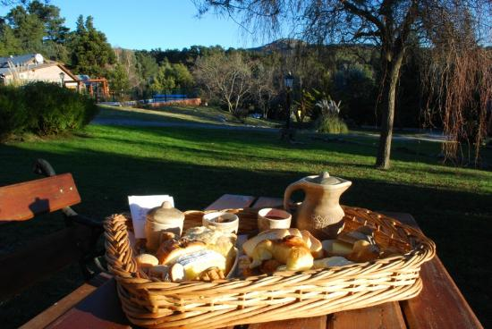

Interior del tianguillo, Parque Pavon, Izucarde Matamoros, Pue.Cel.243 100 94 81.
Carretera Federal Mexico-Oaxaca #6 Barrio Santa catarina.Tel.243 43693 22 .
Rancho el Cantarito, Tlapanala Km.9, San Bernabe Tepetzingo, PUE.

Av oaxaca #55 Barrio San Juan Coahuixtla, Izucar de Matamoros,Pue.Tel.243 436 04 09 .